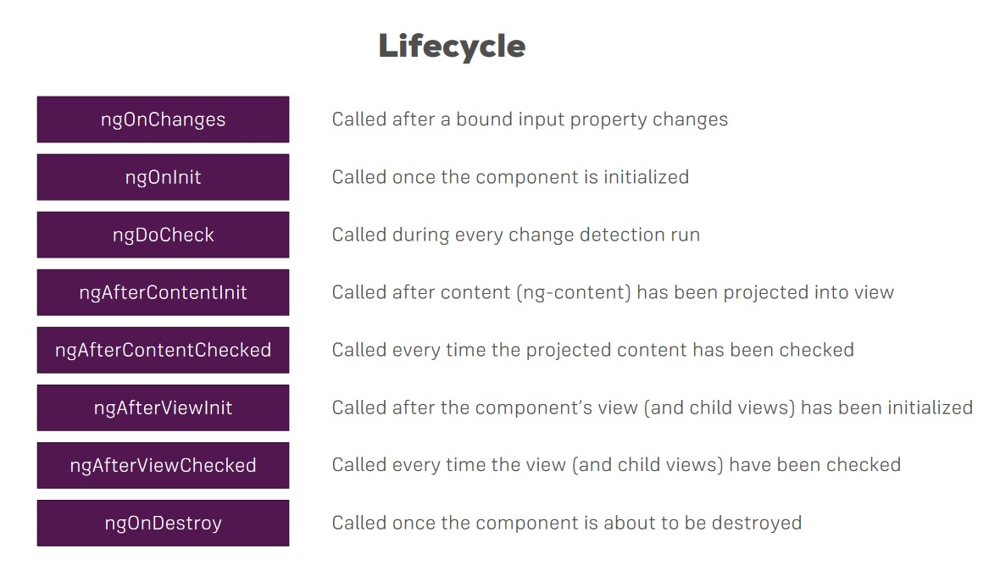

Angular Notes
Based on Udemy Course Angular 8 The Complete Guide by Maximilian Schwarzmüller
Introduction
What is Angular
Reactive Single-Page Applications
Angular Versioning
- AngularJS (Angular 1) -old
- Angular (Angular 2) -rewrite of Angular 1
- ...
- Angular 8
- Big release every 6 months
CLI
ng new my-first-app
Data-binding
{{ title }}
Selectors
<app-root>
ngModel
- Importing forms module
Typescript
- More features than vanilla JS
- Strongly typed
- Compiled to JS
- Handled by CLI
Bootstrap Styling
npm install bootstrap- angular.json
The Basics
app-root- Root component
main.ts- First code executed
- Passes AppModule to method
- First code executed
app.module.ts- Bootstrap array
- main.ts > bootstrap angular application > pass module as arg > selector > html template > html
Components
- Whole application is composed of different components, starting with app component / root component
Create a new Component
- Selectors for other components added -
app.component.html - Folder for component in app folder
- Same name as component for good practice
- Example
// server/server.component.ts
@Component({
// decorators - all start with @
selector: 'app-server',
templateUrl: './server.component.html'
})
export class ServerComponent {}
AppModule
- Components used to build webpages, bundled by modules into packages.
- Has NgModule decorator
- Need to declare component here, declarations array
- Imports array for other modules
- Can create components with CLI
ng generate component serversORng g c servers- Can nest components, a nd/or use multiple times
Component templates
- Must be template property at all times
- Can use templateUrl, or insert HTML:
template: '<app-server><app-server>
Component Styles
- Can wrap bootstrap classes if used
- Can also add to component CSS file
- Reference multiple stylesheets in styleUrls array
Component Selector
- Must be unique
- Can use HTML attribute or tags, class, etc
- Selecting by id not supported
Databinding
- Communication
- TS Code --> HTML (template)
- Output data
- String interpolation
- Surround in double curly brace
{{ data }}
- Any expression that can resolve to a string
- Or easily converted
- Property binding
- Surround in brackets
[property]="data"
- Directly binding to native html property
- Can update dynamically:
[disabled]="!allowNewServer"
- Can also bind to directives or components, other properties
- Surround in brackets
- String interpolation
- React to User Events
- Event-binding
- Surround in parentheses
(event)="expression"(click)="onCreateServer()- On input event
(input)="onUpdateServerName($event)"
- In Method
this.serverName = (<HTMLInputElement>event.target).value
- Event-binding
- Combination
- Two-way binding
- Brackets & Parentheses
[(ngModel)]="data"[(ngModel)]="serverName"
- Two-way binding
Directives
- Instructions in the DOM
<p appTurnGreen>@Directive- Attribute Selector
ngIf
<p *ngIf="serverCreated">- built in
- ' * ' -> structural directive (changes DOM)
- Attribute directors don't add or remove elements, changes element it's placed on
ngStyle
<p [ngStyle]="{backgroundColor: getColor()}">- binding to property of directive
ngClass
[ngClass]="{online: serverStatus ==='online'}"- adds CSS class if condition is true
ngFor
<app-server *ngFor="let server of servers">- Can use
serverin template{{ server }}- get index
let i = index
- Can use
Course Project, Planning
- Shopping List, Recipe Book
- Always Root component
- Header component for connecting List & Book
- Shopping List -> Features
- Shopping List, Edit components
- Recipe Book -> Features
- Recipe List, Recipe Ittem, Recipes Component, Recipes Detail
- Ingredient MModel
- Recipe Model
Creating a Model
export class Recipe {
public name: string;
public description: string;
public imagePath: string;
constructor(name: string, desc: string, imagePath: string) {}
}
Debugging
- Error Messages
- Console in browser
- Sourcemaps
- map JS bundles to TS code
- Webpack
- TS files
- Augury (browser extension)
Components & Data-binding Deep Dive
- Splitting into separate Components
- Array in AppComponent -> Cockpit Component -> Server-Elements Component
- Can use Event & Property binding on directives and components
- Binding to custom properties
- By default component properties only accessible in that component
- Decorators
@Input() // pass a new string for new name outside component- ie:
[element]="serverElement" - Alias
- bind to custom event
- Data up component hierarchy
- New event emitter
@Output() serverCreated = new EventEmitter<{serverName: string, serverContent: string}>();- Optional alias -> arg passed to @Output
View Encapsulation
- CSS between components
- Attributes applied by Angular
- Style encapsulation
- Same attribute to all elements in component
- "Emulates shadow DOM"
- in @Component:
encapsulation: ViewEncapsulation.Emulated // None, Native (other options)
Load references in Templates
- In input element:
#serverNameInput - On button:
(click)="onAddServer(serverNameInput)"
@ViewChild
@ViewChild('serverContentInput', {static: true})
serverControlInput: ElementRef;
this.serverContentInput.nativeElement.value
Projecting content into Components with ng-content
- Everything between open and close of tags on own component will be lost unless:
<ng-content></ng-content>
Component Lifecycle

- ngOnChanges
- Called after a bound input property changes
- ngOnInit
- Called once component is initialized
- ngDoCheck
- Called during every change detection run
- ngAfterContentInit
- Called after content (
ng-content) has been projected into view - ngAfterContentChecked
- Called every time the projected content has been checked
- ngAfterViewInit
- Called after the component's view (and child views) has been initialized
- ngAfterViewChecked
- Called every time the view (and child views) has been checked
- ngOnDestroy
- Called once the component is about to be destroyed
Concept: CONTENT/VIEW
- ngOnChanges example
-
ngOnChanges(changes: SimpleChanges)
- object, with bound property
- 'element' in this case
-
@ContentChild
-
@ContentChild('contentParagraph', { static: true })paragraph: ElementRef- Using projected content/content to be generated
-
App component:
<app-component>
<!-- CONTENT -->
</app-component>
- Access via ViewChild in app.component
- Access via ContentChild in server-element.component
Directives Deep Dive
- Attribute Directives (ngClass, ngStyle)
- Change properties of element
- Structured Directives (ngIf, ngFor)
-
Affects whole area in DOM
-
Can't have more than one structural directive on an element
Creating a Basic Attribute Directive
- Must import Directive from angular core
- Configure:
-
selector: '[myDirective]' // select as attribute - Must inform angular directive exists via app module
-
<p myDirective> ... </p> -
Renderer for better Basic Attribute Directive
- Renderer2
- Better practice:
ngOnInit(){ this.renderer.setStyle(this.elRef.nativeElement, 'background-color', 'blue'); } -
Better to use Renderer for DOM access and it's methods to access DOM
-
Using HostListener to Listen to Host Events
-
@HostListener('mouseenter')mouseover(eventData: event) { // ... } -
Using HostBinding to Bind to Host Properties
@HostBinding('style.backgroundColor') backgroundColor: string- Element must have a property
this.backgroundColor = 'blue';
-
Can bind to any property of element directive is sitting on
-
Binding to directive properties
@Input() defaultColor: string = 'blue'this.backgroundColor = this.defaultColor<p appBetterHighlight [defaultColor]="'yellow'">- CAN bind to properties of our own directives
- CAN omit square brackets, single quotes when passing down a string
-
Make clear property binding is happening, NOT an attribute
-
Creating a Structured Directive
- * indicates a structured directive
- Transformed into something else no * syntax
- There is only:
- Property binding
- Event binding
- Two-way binding
-
String interpolation
-
*ngIf example
- norm:
<div *ngIf="!onlyOdd"> -
transform:
<ng-template [ngIf]="!onlyOdd"> -
Building one
@Input()set unless(value: boolean)-
Must store name!
-
Understanding ngSwitch
<div [ngSwitch]="value">
<p *ngSwitchCase="5">Value is 5</p>
<p *ngSwitchDefault>Default</p>
Using Services & Dependency Injection
- Services address duplicating code or data storage/access
- Centralize a certain task
Creating a Service
- Decorator not needed
- Injecting service into components
- Dependency Injector
-
Hierarchal Injector
- AppModule -> Some instance of service available application-wide
- App Component -> Available for all components (not for other services)
- Any other component -> Same service instance for component and add all child components
-
Add constructor in component where service will be used:
-
constructor(private loggingService: LoggingService) {} // must give type -
Must give providers in component decorator
-
providers: [LoggingService] -
Different instances in this example, providers array dictates new instance if service included, otherwise, same instance.
- Declare Service in providers array overrides the instance next, up, creating it's own.
- Thus, can inject a service into a service
- Injecting requires 'meta-data', found in decorators
- Must use
@Injectablefor service -> service - Into receiving service
- Must use
Cross-Component Communication with Services
- In service:
statusUpdated = new EventEmitter<string>();- In account, onSetTo:
this.accountService.statusUpdated.emit(status);- In new account, constructor:
this.accountService.statusUpdated.subscribe((statis: string) => alert('New status ' + status));-
Provide at AppModule level
-
Alternative syntax:
@Injectable({ providedIn: 'root' })- For application-wide service
Changing Pages with Routing
Why
- Navigation, other pages
Setting up, in AppModule
const appRoutes: Routes = [
{ path: 'user', component: UsersComponent }, // no slash
{ path: '', component: HomeComponent } // home page: '/'
];
-
In component.html:
<router-outlet></router-outlet> -
Implement Navigation with a Directive
- Using
hrefwill reload the app, reseting state. - Not ideal behavior
- in HTML:
<a routerLink="/">Home</a> -
OR (array):
<a [routerLink]="['/users']">-> Property binding (non-string); For nested links -
'/' indicates absolute path
- Navigation will build on what component it's in
/servers/serversexample-
'./' for relative path, or '../'
-
Setting selected nav tab as active dynamically:
routerLinkActive="active" - Empty home path always there, always active
- To fix:
[routerLinkActiveOptions]="{ exact: true }"- Exact path, instead of including
Navigating Programmatically
onLoadServer() {
// calculations
this.router.navigate(['/servers']);
}
-
Inject via constructor:
constructor(private router: Router)-> Import from angular/router -
With relative
- Navigate method above does not know which route you're currently on, opposed to routerLink
- Pass second arg to inform:
this.router.navigate(['servers'], { relativeTo: this.route }); -
Must inject!
private route: ActivatedRoute -
Passing parameters to routes
- Add dynamic part to route:
{ path: 'users/:id', component: UserComponent } -
Fetch route parameters (inject ActivatedRoute)
this.route.snapshot.params['id'] -
Snapshot works for first instance, won't re-render if already on component, need approach to get updated data
this.route.params // Observable
.subscribe( // update user object when params change
(params: Params) => { // import
this.user.id = params['id'];
}
);
-
Snapshot sufficient if component never reloads.
-
For manual unsubscribe:
ngOnDestroy(){ this.paramsSubscription.unsubscribe() } - Component must implement ngOnDestroy
- Params imported
-
Angular does this automatically! Good practice to do manually
-
Passing query params and fragments
[routerLink]="['/servers', 5, 'edit']"[queryParams]="{ allowEdit: '1' }"-
fragment="loading" -
Dynamic:
- HTML:
(click)="onLoadServer(1)" -
TS:
typescript onLoadServer(id: number) { // do stuff this.router.navigate( ['/servers', id, 'edit'] ) } -
Retrieve query params & fragments
- In constructor:
private route: ActivatedRoute - ngOnInit:
this.route.snapshot.queryParamsOR.fragmentthis.route.queryParams.subscribe()-
this.route.fragment.subscribe() -
Params come in as string, convert to number:
const id = +this.route.snapshot.params['id']
Setting up Child (nested) Routes
- Add property to route:
{ path: 'servers', component: ServersComponent,
children: [
{ path: ':id', component: ServerComponent }, // servers will be pre-appended
{ // ... }
]
}
- Must NEST a
<router-outlet> - onEdit button
this.router.navigate(
['edit'], { relativeTo: this.route,
queryParamsHandling: 'preserve' }
// blank for new, keep old overwrite new, merge for no overwrite
);
- Redirecting & Wildcard routes
{ path: 'something', redirectTo: '/not-found' }- ^
path: '**' - Wildcard route, all routes that are not known
- Must be at bottom/last route!
- ^
Outsourcing Route Config
app-routing.module.ts- `@NgModule
- Must export!
Guards
- canActivate:
-
{ path: 'servers', canActivate: [AuthGuard], } // ... -
Protecting child (nested) routes:
- canActivateChild:
canActivateChild: [AuthGuard] // fake or mimic read Auth
Controlling navigation with canDeactivate
- Use for prompting discard of changes or navigate, component must implement
- Given as property in route
- Similar format to canActivate
Passing Static Data to a Route
- Date property in route definition:
{ path: 'not-found', component: ErrorPageComponent, data: { message: 'Page not found!' }}
Resolving Dynamic Data with the resolve Guard
- Resolver Service
- Resolve property on route (best for async)
-
Takes an object
-
{ path: ':id', component: ServerComponent, resolve: { server: ServerResolver }} - "server" is choice of name
this.route.data.subscribe((data: Data) => {
this.server = data['server']; // choice of name "server" here
});
Location Strategies
- Add configs for old browsers
RouterModule.forRoot(appRoutes, { useHash: true })- Hash mode routing
Understanding Observables
- Observable - A data source
- (user input) events, http request, triggered in code.
- Observer
- Handle data, handle error, handle completion
- RxJs
- Unsubscribe if no longer using
- Avoid memory leaks
- Custom Observable
- Imports
- Handle next, complete, error
- Can use built-in operators in between Observer/Observable
- Pipe, operators
- Subject
- More active observable, event emitter
- For communicating between components with Services
Handling Forms in Angular Apps
- Form as a JS object
- Value, metadata
- 2 Approaches
- Template-Driven
- Form object inferred from DOM
-
Reactive
- Synced with DOM
-
Template Driven:
@ViewChild('f', { static: false })
signupForm: NgForm;
<form (ngSubmit)="onSubmit(f)" #f="ngForm">
Validation
- Built-In Validators
- Required
- Form states
- ng-valid
- ng-invalid
- example:
[disabled]="!f.valid",#email="ngModel"<-->*ngIf="!email.valid" - Default value:
[ngModel]="defaultQuestion"- Grouping data:
ngModelGroup="userData" // key#userData="ngModelGroup"- Radio buttons
- Similar to other inputs, add ngModel
Setting & Fetching Form Values
form.setValueform.patchValue- Extract with ViewChild
- Reset Form
signupForm.reset()
Reactive Approach
- In component:
signupForm: FormGroup;- In Module:
ReactiveFormsModule
// in OnInit:
this.signupForm = new FormGroup({
'username': new FormControl(null),
'email': new FormControl(null),
'gender': new FormControl('male')
});
- Submit
<form (ngSubmit)="onSubmit()">- Validation
- Not using required
- Not configured at template
new FormControl(null, Validators.required)- Access to Controls
*ngIf="!signupForm.get('email').valid"- Grouping
FormGroup({ FormControl, Form Control })- In template:
<div formGroupName="userData"> <input formControlName="username">- Access:
*ngIf="!signupForm.get('userData.username').valid"
Arrays of Form Control
- Component:
'hobbies': new FormArray([]) // empty
onAddHobby() {
const control = new FormControl(null);
(<FormArray>this.signupForm.get('hobbies')).push(control);
}
- Template:
<button
(click)="onAddHobby()">
<div
*ngFor="let hobbyControl of signupForm.get('hobbies').controls;
let i = index"
>
<input [formControlName]="i">
Custom Validators
- A function checked during validation
forbiddenNames(control: FormControl): {[s: string]: boolean} { }
- Errors:
-
signupForm.get('userData.email').errors['nameIsForbidden'] -
ASYNC Validator:
forbiddenEmails(control: FormControl): Promise<any> | Observable<any> {
const promise = new Promise<any>((resolve, reject) => {
setTimeout(() => {
if (control.value === 'test@test.com') {
resolve({ 'emailIsForbidden': true });
} else {
resolve(null);
}
}, 1500);
});
return promise;
}
- statusChanges & valueChanges
this.signupForm.statusChanges.subscribe(
(value) => console.log(value)
);
Using Pipes to Transform Output
- For transforming values
<p>{{ username | uppercase }}</p>- Built-in & Custom
- Using
{{ var | date }} - Parameterizing Pipes
{{ var | date: 'fullDate' }} // parameter -> fullDate- For multiple:
date:param:param - Can combine
{{ var | date:'fullDate' | uppercase }}
- Custom
// shorten.pipe.ts
@Pipe({
name: 'shorten'
})
export class ShortenPipe implements PipeTransform {
transform(value: any) {
return value.substr(0, 10);
}
}
- Decorator, also in declarations in app.module.ts
- Parameterizing
shorten: 10 - Can use as filter of loop content
- Pure/Impure Pipes
- Recalculated pipe when data changes - Impure Pipe
- Async Pipe
- Works with Promises, Observables
Making Http Requests
How does Angular interact with backends?
- How to connect Angular to a database
- Not directly
- HTTP Requests/responses
Server
- HTTP Request -> [Server/API (REST, GraphQL)] -> HTTP Response -> Angular -> Store and Fetch Data -> SQL/NoSQL
- HTTP Anatomy
- HTTP Verb
- URL (API Endpoint)
- Headers(metadata)
- Body
- Google Firebase - complete backend service (.json)
- POST
- Need HttpClientModuke in imports -> app.module
- Inject to component
constructor(private http: HttpClient) { }
http.postreturns Observable, must subscribe or won't be sent- Same with GET
- Transform with Pipe
- Example with Map
- Using Services for HttpRequests
-
Service and Components Working together
-
DELETE
- Handle Errors
- Second arg in
subscribe
- Second arg in
- Using a Subject
- All HTTP Methods have options to configure, such as headers
- HttpHeaders
- HttpParams
- HttpEventType
Interceptors
- Service to run right before request
- HttpRequest, HttpHandler
- Structure! (see http-01-start)
- Doesn't need to be injected
- Manipulate Request object
- Request immutable, must create new one
- Response Interceptors
- Pipe handle in return of request
- Multiple
- Order matters!
Authentication and Route Protection in Angular
How it works
- Client -- Sends auth data --> Server
- Server -- Session --> Client
- For Angular, we use single page applications. Front-end decoupled from back-end. Will use a RESTful API since sessions can't be used. Communication done through HttpClient offered by Angular.
- Token sent to client which stores it, stored token is sent to authorize subsequent request.
Adding Auth Page
- Sign up and login.
- Lock down recipes and manage dropdown to only be used by auth'd users.
Switch between Auth Modes
- Use click listener, function to reverse a boolean
Handling Form Input
- Similar to previous forms
<div class="row">
<div class="col-xs-12 col-md-6 col-md-offset-3">
<div class="alert alert-danger" *ngIf="error">
<p>{{ error }}</p>
</div>
<div *ngIf="isLoading" style="text-align: center">
<app-loading-spinner></app-loading-spinner>
</div>
<form #authForm="ngForm" (ngSubmit)="onSubmit(authForm)" *ngIf="!isLoading">
<div class="form-group">
<label for="email">E-Mail</label>
<input
type="email"
id="email"
class="form-control"
ngModel
name="email"
required
email
>
</div>
<div class="form-group">
<label for="password">Password</label>
<input
type="password"
id="password"
class="form-control"
ngModel
name="password"
required
minlength="6"
>
</div>
<div>
<button class="btn btn-primary" type="submit" [disabled]="!authForm.valid">
{{ isLoginMode ? 'Login' : 'Sign Up' }}
</button>
|
<button class="btn btn-primary" (click)="onSwitchMode()" type="button">
Switch to {{ isLoginMode ? 'Sign Up' : 'Login' }}
</button>
</div>
</form>
</div>
</div>
- Use service to communicate with backend and authenticate
- Interface of response data
export interface AuthResponseData {
kind: string;
idToken: string;
email: string;
refreshToken: string;
expiresIn: string;
localId: string;
registered?: boolean; // optional, is only in login res
}
- Chaining observables
onSubmit(form: NgForm) {
if (!form.valid) {
return;
}
const email = form.value.email;
const password = form.value.password;
let authObs: Observable<AuthResponseData>;
this.isLoading = true;
if (this.isLoginMode) {
authObs = this.authService.login(email, password);
} else {
authObs = this.authService.signup(email, password);
}
authObs.subscribe(resData => {
console.log(resData);
this.isLoading = false;
}, errorMessage => {
console.log(errorMessage);
this.error = errorMessage;
this.isLoading = false;
});
form.reset();
}
- Source error handling to private function in service.
private handleError(errorRes: HttpErrorResponse) {
let errorMessage = 'An unknown error occurred!';
if (!errorRes.error || !errorRes.error.error) {
return throwError(errorMessage);
}
switch (errorRes.error.error.message) {
case 'EMAIL_EXISTS':
errorMessage = 'This email exists already.';
break;
case 'EMAIL_NOT_FOUND':
errorMessage = 'This email does not exist';
break;
case 'INVALID_PASSWORD':
errorMessage = 'This password is not correct';
break;
}
return throwError(errorMessage);
}
Creating and Storing the User Data
- Create a user model
// src/app/auth/user.model.ts
export class User {
constructor(
public email: string,
public id: string,
// underscore & private for validity
private _token: string,
private _tokenExpirationDate: Date
) {}
/*
getter using get keyword
access like a property
allows for logic in validity and checks
*/
get token() {
if (!this._tokenExpirationDate || new Date() > this._tokenExpirationDate) {
return null;
}
return this._token;
}
}
- Use in Auth Service
// src/app/auth/auth.service.ts
user = new Subject<User>();
// ...
private handleAuthentication(
email: string,
userId: string,
token: string,
expiresIn: number
) {
const expirationDate = new Date(new Date().getTime() + expiresIn * 1000);
const user = new User(email, userId, token, expirationDate);
this.user.next(user);
}
// integrate to login and signup, from pipe
.pipe(
catchError(this.handleError),
tap(resData => {
this.handleAuthentication(
resData.email,
resData.localId,
resData.idToken,
+resData.expiresIn
);
})
);
Reflecting the Auth State in the UI
-
Add
this.router.navigate(['/recipes]);to successful auth subscriber in auth component. -
Reflect state in Header component
- Disable recipes link if not logged in
- Disable Authenticate link only if logged in.
- Disable dropdown if not logged in
- Show Logout button
- Get current auth status into header component (user with valid token or not)
isAuthenticated = false;
private userSub = Subscription;
// inject auth service
// implement ngOnInit and ngOnDestroy
ngOnInit() {
this.userSub = this.authService.user.subscribe(user => {
this.isAuthenticated = !!user;
console.log(!user);
console.log(!!user);
});
}
// then use ngIf in template
Adding the Token to Outgoing Requests
- Change user in auth service
user = new BehaviorSubject<User>(null);
- Use this to pull one value from user object in data-storage service, using take, and refactoring fetchRecipes:
fetchRecipes() {
return this.authService.user.pipe(
take(1),
exhaustMap(user => {
return this.http.get<Recipe[]>(
'https://ng-learn-practice.firebaseio.com/recipes.json'
);
}),
map(recipes => {
return recipes.map(recipe => {
return {
...recipe,
ingredients: recipe.ingredients ? recipe.ingredients : []
};
});
}),
tap(recipes => {
this.recipeService.setRecipes(recipes);
})
);
}
Attaching the Token with an Interceptor
- Want to also add token to storeRecipes
- Use an interceptor to manipulate requests instead of handling it twice.
// src/app/auth/auth-interceptor.service.ts
import { Injectable } from '@angular/core';
import {
HttpInterceptor,
HttpRequest,
HttpHandler,
HttpParams
} from '@angular/common/http';
import { AuthService } from './auth.service';
import { take, exhaustMap } from 'rxjs/operators';
@Injectable()
export class AuthInterceptorService implements HttpInterceptor {
constructor(private authService: AuthService) {}
intercept(req: HttpRequest<any>, next: HttpHandler) {
return this.authService.user.pipe(
take(1),
exhaustMap(user => {
// must check, only add token if we have a user! otherwise send original req
if (!user) {
return next.handle(req);
}
const modifiedRequest = req.clone({
params: new HttpParams().set('auth', user.token)
});
return next.handle(modifiedRequest);
})
);
}
}
Adding Logout
- Add method to authService and link to header
// src/app/auth/auth.service.ts
logout() {
this.user.next(null);
this.router.navigate(['/auth']);
}
// src/app/header/header.component.ts
onLogout() {
this.authService.logout();
}
Adding Auto-Login
- Use local storage via browser to store token to be persisted in app reload
- Add to end of handleAuthentication in auth service:
localStorage.setItem('userData', JSON.stringify(user)); - Implement autoLogin method
autoLogin(){
const userData: {
email: string,
id: string,
_token: string,
_tokenExpirationDate: string;
} = JSON.parse(localStorage.getItem('userData'));
if (!userData) {
return;
}
const loadedUser = new User(userData.email, userData.id, userData._token, new Date(userData._tokenExpirationDate));
if (loadedUser.token) {
this.user.next(loadedUser);
}
}
- Add to App Component (runs first)
ngOnInit() { this.authService.autoLogin(); }
Adding Auto-Logout
- Need to manually clear the snapshot of the user
- At end of logout method in auth service
localStorage.removeItem('userData');
- Must set timer to know when to invalidate token. autoLogout method
- Must also clear token expiration timer.
- Store in property
private tokenExpirationTimer: any;
logout() {
this.user.next(null);
this.router.navigate(['/auth']);
localStorage.removeItem('userData');
if (this.tokenExpirationTimer) {
clearTimeout(this.tokenExpirationTimer);
}
this.tokenExpirationTimer = null;
}
autoLogout(expirationDuration: number) {
this.tokenExpirationTimer = setTimeout(() => {
this.logout();
}, expirationDuration);
}
- Need to call autoLogout everyime we emit a new user to the app. So, in handleAuthentication and autoLogin methods
// in handleAuthentication method
this.user.next(user);
this.autoLogout(expiresIn * 1000);
- Must calculate expiration date in autoLogin
// in autoLogin method
if (loadedUser.token) {
this.user.next(loadedUser);
const expirationDuration =
new Date(userData._tokenExpirationDate).getTime() -
new Date().getTime();
this.autoLogout(expirationDuration);
}
Adding an Auth Guard
- Run logic right before a route is loaded.
// ./src/app/auth/auth.guard.ts
import {
CanActivate,
ActivatedRouteSnapshot,
RouterStateSnapshot
} from '@angular/router';
import { Injectable } from '@angular/core';
import { Observable } from 'rxjs';
import { map } from 'rxjs/operators';
import { AuthService } from './auth.service';
@Injectable({ providedIn: 'root' })
export class AuthGuard implements CanActivate {
constructor(private authService: AuthService) {}
canActivate(
route: ActivatedRouteSnapshot,
router: RouterStateSnapshot
): boolean | Promise<boolean> | Observable<boolean> {
return this.authService.user.pipe(
map(user => {
return !!user;
})
);
}
}
- Add to Router Module
// ./src/app/app-routing.module
path: 'recipes',
component: RecipesComponent,
canActivate: [AuthGuard],
children: [
// ...
- Add redirect on attempt to go to /recipes
- Used to have to add router and tap, redirect manually
- Can now use URL Tree
import {
CanActivate,
ActivatedRouteSnapshot,
RouterStateSnapshot,
Router,
UrlTree
} from '@angular/router';
import { Injectable } from '@angular/core';
import { Observable } from 'rxjs';
import { map } from 'rxjs/operators';
import { AuthService } from './auth.service';
@Injectable({ providedIn: 'root' })
export class AuthGuard implements CanActivate {
constructor(private authService: AuthService, private router: Router) {}
canActivate(
route: ActivatedRouteSnapshot,
router: RouterStateSnapshot
):
| boolean
| UrlTree
| Promise<boolean | UrlTree>
| Observable<boolean | UrlTree> {
return this.authService.user.pipe(
take(1),
map((user) => {
const isAuth = !!user;
if (isAuth) {
return true;
}
return this.router.createUrlTree(['/auth']);
})
);
}
}
Dynamic Components
What are Dynamic Components(?)
- Components you create dynamically at runtime.
- Show an alert, some modal, some overlay, etc
- How to load it on demand, communicate, and get rid of it.
Adding an Alert Modal Component
- Build simple alert box on invalid login credentials
// ./src/app/shared/alert/alert.component.ts
import { Component, Input } from '@angular/core';
@Component({
selector: 'app-alert',
templateUrl: './alert.component.html',
styleUrls: ['./alert.component.css']
})
export class AlertComponent {
@Input() message: string;
}
<!-- ./src/app/shared/alert/alert.component.html -->
<div class="backdrop"></div>
<div class="alert-box">
<p>{{ message }}</p>
<div class="alert-box-actions">
<button class="btn btn-primary">Close</button>
</div>
</div>
/* ./src/app/shared/alert/alert.component.css */
.backdrop {
position: fixed;
top: 0;
left: 0;
width: 100vw;
height: 100vh;
background: rgba(0, 0, 0, 0.75);
z-index: 50;
}
.alert-box {
position: fixed;
top: 30vh;
left: 20vw;
width: 60vw;
padding: 16px;
z-index: 100;
background: white;
box-shadow: 0 2px 8px rbga(0, 0, 0, 0.26);
}
.alert-box-actions {
text-align: right;
}
<!-- ./src/app/auth/auth.component.html -->
<!-- <div class="alert alert-danger" *ngIf="error">
<p>{{ error }}</p>
</div> -->
<app-alert [message]="error" *ngIf="error"></app-alert>
Understanding the Different Approaches
- What are dynamic components?
- Loaded Programmatically
- *ngIf
- Component embedded via selector (declaratively)
- *ngIf controls whether component is added to DOM
- Dynamic Component Loader (doesn't exist anymore)
- Component created and added to DOM via code (imperatively)
- Component is managed & added by developer
Using ngIf
<!-- ./src/app/auth/auth.component.html -->
<app-alert [message]="error" *ngIf="error" (close)="onHandleError()"></app-alert>
// ./src/app/auth/auth.component.ts
onHandleError() {
this.error = null;
}
// ./src/app/shared/alert/alert.component.ts
@Input() message: string;
@Output() close = new EventEmitter<void>();
onClose() {
this.close.emit();
}
<!-- ./src/app/shared/alert/alert.component.html -->
<div class="backdrop" (click)="onClose()"></div>
<div class="alert-box">
<p>{{ message }}</p>
<div class="alert-box-actions">
<button class="btn btn-primary" (click)="onClose()">Close</button>
</div>
</div>
Preparing Programmatic Creation
- Comment out app-alert in html
- Create method in auth component
// ./src/app/auth/auth.component.ts
// on error in authObs:
this.error = errorMessage;
this.showErrorAlert(errorMessage);
this.isLoading = false;
// Use component factory resolver, inject into constructor
private showErrorAlert(message: string) {
const alertCmpFactory = this.componentFactoryResolver.resolveComponentFactory(
AlertComponent
);
}
- Create a directive
// ./src/app/shared/placeholder/placeholder.directive.ts
import { Directive, ViewContainerRef } from '@angular/core';
@Directive({
selector: '[appPlaceholder]'
})
export class PlaceholderDirective {
constructor(public viewContainerRef: ViewContainerRef) {}
}
Creating a Component Programmatically
- Add ng-template to HTML
<!-- ./src/app/auth/auth.component.html -->
<!-- Get access to this place in the DOM -->
<ng-template appPlaceholder></ng-template>
// ./src/app/auth/auth.component.ts
// Access directive with @ViewChild
@ViewChild(PlaceholderDirective, { static: false }) alertHost: PlaceholderDirective;
// ...
private showErrorAlert(message: string) {
const alertCmpFactory = this.componentFactoryResolver.resolveComponentFactory(
AlertComponent
);
const hostViewContainerRef = this.alertHost.viewContainerRef;
hostViewContainerRef.clear();
hostViewContainerRef.createComponent(alertCmpFactory);
}
// ERROR: No component factory found for AlertComponent. Did you add it to @NgMOdule.entryComponents?
Understanding entryComponents
- Angular does not automatically reach out to declarations array when creating component manually in code.
- To tell Angular to be prepared for creation of that component, need to add special property to the object passed to NgModule
// ./src/app/app.module.ts
// in NgModule declaration
bootstrap: [AppComponent],
entryComponents: [
AlertComponent
]
Data Binding and Event Binding
- Create instance with component ref
- To close, manually have to listen to our close event
// ./src/app/auth/auth.component.ts
private showErrorAlert(message: string) {
const alertCmpFactory = this.componentFactoryResolver.resolveComponentFactory(
AlertComponent
);
const hostViewContainerRef = this.alertHost.viewContainerRef;
hostViewContainerRef.clear();
const componentRef = hostViewContainerRef.createComponent(alertCmpFactory);
componentRef.instance.message = message;
// Must create closeSub: Subscription
this.closeSub = componentRef.instance.close.subscribe(() => {
this.closeSub.unsubscribe();
hostViewContainerRef.clear();
});
}
Angular Modules & Optimizing Angular Apps
What are Modules
- Modules are ways to bundle Angular building blocks together
- Angular analyzes NgModules to understand your application and it's features.
- Defines all building blocks your app uses:
- Components, directives, services, pipes
- Application requires at least one module (AppModule) but may be split into multiple modules.
- Core Angular features are included in Angular modules (e.g. FormsModule) to load them only when needed.
- Can't use a feature/building block without including it in a module.
Analyzing the AppModule
- Already using two modules in shop recipe project
app.module.tsapp-routing.module.ts- AppModule
- Declarations
- Array of all components, directives, custom pipes being used in application
- Imports array
- Import other modules into this module.
- Split into multiple modules.
- Providers array
- Define all services we want to provide.
- Any service you plan on injecting, must add here.
- Bootstrap array
- Starting app, defines what component is available in index.html file.
- Typically one root component in bootstrap array
- Entry Components array
- For components created in code or programmatically
- AppRoutingModule
- Separation of concerns, leaner and more focused.
- Imports RouterModule
- Exported here.
- Made available in AppModule
- Every module works on its own
- Splitting modules help with performance
Getting Started with Feature Modules
- Working with multiple modules, splitting into multiple feature modules.
- Products Module
- Orders Module
- In relation to course project
- 3 main feature areas:
- Recipes
- Shopping List
- Authentication
- Everything in a module stands alone
Initial Recipes Module
// ./src/app/recipes/recipes.module.ts
import { NgModule } from '@angular/core';
import { CommonModule } from '@angular/common';
import { RouterModule } from '@angular/router';
import { ReactiveFormsModule } from '@angular/forms';
import { RecipesComponent } from './recipes.component';
import { RecipeListComponent } from './recipe-list/recipe-list.component';
import { RecipeDetailComponent } from './recipe-detail/recipe-detail.component';
import { RecipeItemComponent } from './recipe-list/recipe-item/recipe-item.component';
import { RecipeStartComponent } from './recipe-start/recipe-start.component';
import { RecipeEditComponent } from './recipe-edit/recipe-edit.component';
@NgModule({
declarations: [
RecipesComponent,
RecipeListComponent,
RecipeDetailComponent,
RecipeItemComponent,
RecipeStartComponent,
RecipeEditComponent,
],
exports: [
RecipesComponent,
RecipeListComponent,
RecipeDetailComponent,
RecipeItemComponent,
RecipeStartComponent,
RecipeEditComponent,
]
})
export class RecipesModule {}
Splitting Modules Correctly
- Using something other than a service, only have access to what you import
- Import RouterModule
- Don't import BrowserModule
- CommonModule instead
- Import ReactiveFormsModule for recipe forms.
- Recipes module finished!
Recipes Module
// src/app/recipes/recipes.module.ts
// imports
@NgModule({
// ...
imports: [RouterModule, CommonModule, ReactiveFormsModule],
// ...
})
export class RecipesModule {}
Adding Routes to Feature Modules
- Move recipes segment of routing module to recipes module
RecipesRoutingModule
// ./src/app/recipes/recipes.module.ts
import { NgModule } from '@angular/core';
import { Routes, RouterModule } from '@angular/router';
import { RecipesComponent } from './recipes.component';
import { AuthGuard } from '../auth/auth.guard';
import { RecipeStartComponent } from './recipe-start/recipe-start.component';
import { RecipeEditComponent } from './recipe-edit/recipe-edit.component';
import { RecipeDetailComponent } from './recipe-detail/recipe-detail.component';
import { RecipesResolverService } from './recipes-resolver.service';
const routes: Routes = [
{
path: 'recipes',
component: RecipesComponent,
canActivate: [AuthGuard],
children: [
{ path: '', component: RecipeStartComponent},
{ path: 'new', component: RecipeEditComponent },
{
path: ':id',
component: RecipeDetailComponent,
resolve: [RecipesResolverService]
},
{
path: ':id/edit',
component: RecipeEditComponent,
resolve: [RecipesResolverService]
}
]
}
];
@NgModule({
imports: [RouterModule.forChild(routes)],
exports: [RouterModule]
})
export class RecipesRoutingModule {}
Component Declarations
- Declaration and export important, must include components for routes used.
- Don't need exports in recipe module here, since not using in app component.
Shopping List Feature Module
// src/app/shopping-list/shopping-list.module.ts
import { NgModule } from '@angular/core';
import { RouterModule } from '@angular/router';
import { CommonModule } from '@angular/common';
import { FormsModule } from '@angular/forms';
import { ShoppingListComponent } from './shopping-list.component';
import { ShoppingEditComponent } from './shopping-edit/shopping-edit.component';
@NgModule({
declarations: [ShoppingListComponent, ShoppingEditComponent,],
imports: [
CommonModule,
FormsModule,
RouterModule.forChild([
{ path: 'shopping-list', component: ShoppingListComponent }
])
]
})
export class ShoppingListModule {}
Understanding Shared Modules
- Two feature modules, differing in one component
- Can move components in common to shared module to be imported by both
- Do this in Shop Recipe with Shared folder
- Import and export relevant components
- Can't have multiple declarations
// src/app/shared/shared.module.ts
import { NgModule } from '@angular/core';
import { AlertComponent } from './alert/alert.component';
import { LoadingSpinnerComponent } from './loading-spinner/loading-spinner.component';
import { PlaceholderDirective } from './placeholder/placeholder.directive';
import { DropdownDirective } from './dropdown.directive';
import { CommonModule } from '@angular/common';
@NgModule({
declarations: [
AlertComponent,
LoadingSpinnerComponent,
PlaceholderDirective,
DropdownDirective
],
imports: [
CommonModule
],
exports: [
AlertComponent,
LoadingSpinnerComponent,
PlaceholderDirective,
DropdownDirective,
CommonModule
],
entryComponents: [
AlertComponent
]
})
export class SharedModule {}
// import into shopping list module instead of common module
Understanding the Core Module
- Makes app module leaner
- Can use to move services out, organize into one module, then bring core module back into app module
- Provide application-wide services in separate module, to keep app module leaner
// src/app/core.module.ts
import { NgModule } from '@angular/core';
import { HTTP_INTERCEPTORS } from '@angular/common/http';
import { ShoppingListService } from './shopping-list/shopping-list.service';
import { RecipeService } from './recipes/recipe.service';
import { AuthInterceptorService } from './auth/auth-interceptor.service';
@NgModule({
providers: [
ShoppingListService,
RecipeService,
{
provide: HTTP_INTERCEPTORS,
useClass: AuthInterceptorService,
multi: true
}
]
})
export class CoreModule {}
Adding an Auth Feature Module
// src/app/auth/auth.module.ts
import { NgModule } from '@angular/core';
import { CommonModule } from '@angular/common';
import { FormsModule } from '@angular/forms';
import { AuthComponent } from './auth.component';
import { RouterModule } from '@angular/router';
import { SharedModule } from '../shared/shared.module';
@NgModule({
declarations: [AuthComponent],
imports: [
CommonModule,
FormsModule,
RouterModule.forChild([
{ path: 'auth', component: AuthComponent }
]),
SharedModule
]
})
export class AuthModule {}
Understanding Lazy Loading
- An optimization concept
- Previous refactoring only cosmetic, not performative.
- Only run code that belongs to separate areas when we really need it
- Only load when we visit
Implementing Lazy Loading
- For lazy loading, feature module needs to bring it's own routes.
- Have to change to empty path in recipes routing module, since it is now being used in app-routing module
More Lazy Loading
- Implement on Shopping List and Auth modules
- Final result:
// src/app/app-routing.module.ts
import { NgModule } from '@angular/core';
import { Routes, RouterModule } from '@angular/router';
const appRoutes: Routes = [
{ path: '', redirectTo: '/recipes', pathMatch: 'full' },
{
path: 'recipes',
loadChildren: () =>
import('./recipes/recipes.module').then(m => m.RecipesModule)
},
{
path: 'shopping-list',
loadChildren: () =>
import('./shopping-list/shopping-list.module').then(m => m.ShoppingListModule)
},
{
path: 'auth',
loadChildren: () =>
import('./auth/auth.module').then(m => m.AuthModule)
}
];
@NgModule({
imports: [RouterModule.forRoot(appRoutes)],
exports: [RouterModule]
})
export class AppRoutingModule {}
Preloading Lazy-Loaded Code
- Small delay, this will alleviate that
- Preloads bundles as soon as possible
imports: [RouterModule.forRoot(appRoutes, {preloadingStrategy: PreloadAllModules})],
Modules and Services
- Can provide Service in
- AppModule
- Available app-wide
- Use root injector
- Should be default
- AppComponent(or other Components)
- Available in component-tree
- Use component-specific injector
- Use if service is only relevant for component tree
- Eager-loaded Module
- Available app-wide
- Use root injector
- Avoid this! Same effect as AppModule
- Lazy-Loaded Module
- Available in loaded module
- Use child injector
- Use if service should be scoped to loaded module
Loading Services Differently
- Different instances
// Service loading demo
// src/app/logging.service.ts
import { Injectable } from '@angular/core';
// @Injectable({ providedIn: 'root' })
export class LoggingService {
lastLog: string;
printLog(message: string) {
console.log(message);
console.log(this.lastLog);
this.lastLog = message;
}
}
Ahead-of-Time Compilation
- Code and templates compiled to Javascript with TS compiler.
- Angular compiler (automatically included in built code) compile template syntax to Javascript DOM instructions
- Just-in-Time(JiT) Compilation
- Angular template compiler runs in browser (at runtime)
- Ahead-of-Time (AoT) Compilation
- Angular template compiler runs during build process (before app is deployed)
ng servedoes JiT compilation by default- Run
ng build --prod - Error with recipe-edit controls, fixed before
get controls() { return (this.recipeForm.get('ingredients') as FormArray).controls; }
Deploying an Angular App
- Using Firebase
Preparation
- Use & check Environment Variables
- Polish & test code
ng build --prod- Uses ahead-of-time compilation
- Deploy build artificats (generated files) to static host
- No server-side language on static host, just HTML, JS, CSS
Using Environment Variables
src/environments
- File for production, and one for development
environment.ts-
environment.prod.ts -
Import (used here with firebase API key in authentication service)
import { environment } from '../../environments/environment';environment.firebaseAPIKey
Deployment Example: Firebase Hosting
- Options for static website hosting
- AWS S3
- Firebase Hosting
-
etc..
-
For Firebase, first install
npm i -g firebase-tools- Initialize
firebase init- Go through settings
- Deploy
firebase deploy
Server Routing vs Browser Routing
- When deploying an Angular app, it's really important to make sure that your server (like S3) is configured to always serve the index.html file. Here's why.
Bonus: Working with NgRx in our Project
- State management
What is Application State
- Example
- WelcomeComponent
- NewTrainingComponent
- CurrentTraining Component
- TrainingService
- Fetch excercises (NewTrainingComponent)
- Store excercises (CurrentTrainingComponent)
- Application state lost when application refreshes!
- TrainingService Store & Fetch on Backend
- Known as Persistent State on Backend
- ShoppingListService as example on our Recipe App
- (User) Event in UI/App -> State Changing Event -> Observable -> Operators* -> Listener -> Update UI
- *Optional
- Using Subjects, Observables
- Push subscribe mechanism
What is NgRx
- Issues with the RxJS Approach
- State can be updated anywhere
- State is (possibly) mutable
- Handling side effects (e.g. Http calls) is unclear
- No specific Pattern is Enforced
- Redux
- State management pattern and library
- Store - Application State
- Services & Components receive state from Store
- Actions - Dispatch
- Sent to Reducers
- Reduces/Combines State
- Returns new state
- Store saves reduced State (immutably)
- NgRx is Angular's Implementation of Redux
- Differences to "normal" Redux
- Deeply integrated into Angular
- Injectable Services
- Uses RxJS
- Observables
- (Uses Typescript)
Getting Started with Reducers
- App is fine as is
- Recommended to follow for introduction to this pattern
- Install:
npm i --save @ngrx/store
// src/app/shopping-list/shopping-list.reducer.ts
import { Ingredient } from '../shared/ingredient.model';
const initialState = {
ingredients: [
new Ingredient('Apples', 5),
new Ingredient('Tomatoes', 10),
]
};
export function shoppingListReducer(state = initialState, action) {}
Adding Logic to the Reducer
- Never touch existing state.
- Instead, return new object to replace old state
- Copy old state
import { Ingredient } from '../shared/ingredient.model';
import { Action } from '@ngrx/store';
const initialState = {
ingredients: [
new Ingredient('Apples', 5),
new Ingredient('Tomatoes', 10),
]
};
export function shoppingListReducer(state = initialState, action: Action) {
switch (action.type) {
case 'ADD_INGREDIENT':
return {
...state, // good practice to always copy over old state
ingredients: [...state.ingredients, action]
};
}
}
Understanding and Adding Actions
// src/app/shopping-list/store/shopping-list.actions.ts
import { Action } from '@ngrx/store';
import { Ingredient } from 'src/app/shared/ingredient.model';
export const ADD_INGREDIENT = 'ADD_INGREDIENT';
export class AddIngredient implements Action {
readonly type = ADD_INGREDIENT;
payload: Ingredient;
// "payload" not a required name, can use any. only "type" property is required.
}
Setting up the NgRx Store
// src/app/shopping-list/store/shopping-list.reducer.ts
import { Ingredient } from '../../shared/ingredient.model';
import * as ShoppingListActions from './shopping-list.actions';
const initialState = {
ingredients: [
new Ingredient('Apples', 5),
new Ingredient('Tomatoes', 10),
]
};
export function shoppingListReducer(state = initialState, action: ShoppingListActions.AddIngredient) {
switch (action.type) {
case ShoppingListActions.ADD_INGREDIENT:
return {
...state, // good practice to always copy over old state
ingredients: [...state.ingredients, action.payload]
};
}
}
- Add to AppModule imports array:
StoreModule.forRoot({ShoppingList: shoppingListReducer}),
Selecting State
- Inject to ShoppingListComponent:
private store: Store<{ shoppingList: { ingredients: Ingredient[] } }>
import { Ingredient } from '../../shared/ingredient.model';
import * as ShoppingListActions from './shopping-list.actions';
const initialState = {
ingredients: [new Ingredient('Apples', 5), new Ingredient('Tomatoes', 10)]
};
export function shoppingListReducer(
state = initialState,
action: ShoppingListActions.AddIngredient
) {
switch (action.type) {
case ShoppingListActions.ADD_INGREDIENT:
return {
...state, // good practice to always copy over old state
ingredients: [...state.ingredients, action.payload]
};
default:
return state;
}
}
Dispatching Actions
- Find where we change state
- Create new object based on Action class and dispatch it
- Instead of adding payload as property in shopping-list actions, make into constructor funtion.
constructor(public payload: Ingredient) {}- When add ingredient, dispatch action, which reaches all reducers (1 in this case), in shopping-edit
this.store.dispatch(new ShoppingListActions.AddIngredient(newIngredient));- Flow
- Add ingredient -> Dispatch the action (defined in actions) -> to ngrx store (aware of reducer) -> action reaches all reducers that store knows -> in reducer, action passed as second arg -> check for type of action -> react appropriately.
- Now using ngRx end-to-end for displaying and adding ingredients
Multiple Actions
- Handle other state changes:
- Add multiple ingredients
- Update Ingredient
-
Delete Ingredient
-
Add Multiple Ingredients
// src/app/shopping-list/store/shopping-list.actions.ts
export const ADD_INGREDIENTS = 'ADD_INGREDIENTS';
export class AddIngredients implements Action {
readonly type = ADD_INGREDIENTS;
constructor(public payload: Ingredient[]) {}
}
// create union of diff action types
export type ShoppingListActions = AddIngredient | AddIngredients;
- Implement on state change
// src/app/recipes/recipe.service.ts
addIngredientsToShoppingList(ingredients: Ingredient[]) {
// this.sLService.addIngredients(ingredients);
this.store.dispatch(new ShoppingListActions.AddIngredients(ingredients));
}
Preparing Update & Delete Actions
- Add constants, classes, and add to union
// src/app/shopping-list/store/shopping-list.actions.ts
export const UPDATE_INGREDIENT = 'UPDATE_INGREDIENT';
export const DELETE_INGREDIENT = 'DELETE_INGREDIENT';
export class UpdateIngredient implements Action {
readonly type = UPDATE_INGREDIENT;
constructor(public payload: { index: number; ingredient: Ingredient }) {}
}
export class DeleteIngredient implements Action {
readonly type = DELETE_INGREDIENT;
constructor(public payload: number) {}
}
export type ShoppingListActions =
| AddIngredient
| AddIngredients
| UpdateIngredient
| DeleteIngredient;
Updating & Deleting Ingredients
- Updating Ingredient
- Must create new state, object
- Create a copy
// src/app/shopping-list/store/shopping-list.reducer.ts
case ShoppingListActions.UPDATE_INGREDIENT:
const ingredient = state.ingredients[action.payload.index];
const updatedIngredient = {
...ingredient,
...action.payload.ingredient
};
const updatedIngredients = [...state.ingredients];
updatedIngredients[action.payload.index] = updatedIngredient;
return {
...state,
ingredients: [updatedIngredients]
};
- Delete Ingredient
- Using filter
// src/app/shopping-list/store/shopping-list.reducer.ts
case ShoppingListActions.DELETE_INGREDIENT:
return {
...state,
ingredients: state.ingredients.filter((ig, igIndex) => {
return igIndex !== action.payload;
})
};
Expanding the State
- Shopping Edit ngOnInit manages ingredients and whether we're editting or not from service
- Translate to ngRx
- Dispatch action for start editing, in shopping list on edit item
- Now we need more than just the ingredients in state
- Also want to store edited ingredient and index
- Change structure of state:
// src/app/shopping-list/store/shopping-list.reducer.ts
const initialState = {
ingredients: [new Ingredient('Apples', 5), new Ingredient('Tomatoes', 10)],
editedIngredient: null,
editedIngredientIndex: -1
};
- Now must change definition of return type
- Use simpler pattern
// src/app/shopping-list/store/shopping-list.reducer.ts
export interface State {
ingredients: Ingredient[];
editedIngredient: Ingredient;
editedIngredientIndex: number;
}
export interface AppState {
shoppingList: State;
}
Managing More State via NgRx
- Need action for starting and cancelling edit process
// src/app/shopping-list/store/shopping-list.actions.ts
export const START_EDIT = 'START_EDIT';
export const STOP_EDIT = 'STOP_EDIT';
// ...
export class StartEdit implements Action {
readonly type = START_EDIT;
constructor(public payload: number) {}
}
export class StopEdit implements Action {
readonly type = STOP_EDIT;
}
- Create cases in Reducer:
// src/app/shopping-list/store/shopping-list.reducer.ts
case ShoppingListActions.START_EDIT:
return {
...state,
editedIngredientIndex: action.payload,
editedIngredient: { ...state.ingredients[action.payload] }
};
case ShoppingListActions.STOP_EDIT:
return {
...state,
editedIngredient: null,
editedIngredientIndex: -1
};
- Now must dispatch the actions appropriately.
// src/app/shopping-list/shopping-list.component.ts
onEditItem(index: number) {
// this.slService.startedEditing.next(index);
this.store.dispatch(new ShoppingListActions.StartEdit(index));
}
// src/app/shopping-list/shopping-edit/shopping-edit.component.ts
constructor(
private slService: ShoppingListService,
private store: Store<fromShoppingList.AppState>
) {}
ngOnInit() {
this.subscription = this.store.select('shoppingList').subscribe(stateData => {
if (stateData.editedIngredientIndex > -1) {
this.editMode = true;
this.editedItem = stateData.editedIngredient;
this.slForm.setValue({
name: this.editedItem.name,
amount: this.editedItem.amount
});
} else {
this.editMode = false;
}
});
}
Removing Redundant Component State Management
- We have index in our state, so instead of passing that as data, remove
- Final shopping list actions:
// src/app/shopping-list/store/shopping-list.actions.ts
import { Action } from '@ngrx/store';
import { Ingredient } from 'src/app/shared/ingredient.model';
export const ADD_INGREDIENT = 'ADD_INGREDIENT';
export const ADD_INGREDIENTS = 'ADD_INGREDIENTS';
export const UPDATE_INGREDIENT = 'UPDATE_INGREDIENT';
export const DELETE_INGREDIENT = 'DELETE_INGREDIENT';
export const START_EDIT = 'START_EDIT';
export const STOP_EDIT = 'STOP_EDIT';
export class AddIngredient implements Action {
readonly type = ADD_INGREDIENT;
// payload: Ingredient;
// "payload" not a required name, can use any. only "type" property is required.
constructor(public payload: Ingredient) {}
}
export class AddIngredients implements Action {
readonly type = ADD_INGREDIENTS;
constructor(public payload: Ingredient[]) {}
}
export class UpdateIngredient implements Action {
readonly type = UPDATE_INGREDIENT;
constructor(public payload: Ingredient) {}
}
export class DeleteIngredient implements Action {
readonly type = DELETE_INGREDIENT;
}
export class StartEdit implements Action {
readonly type = START_EDIT;
constructor(public payload: number) {}
}
export class StopEdit implements Action {
readonly type = STOP_EDIT;
}
export type ShoppingListActions =
| AddIngredient
| AddIngredients
| UpdateIngredient
| DeleteIngredient
| StartEdit
| StopEdit;
First Summary & Clean Up
- Added NgRx to Application by including the StoreModule and calling forRoot
- forRoot then needs a map (basically an object) that tells NgRx which reducers we have in our application.
- All these reducers and the state they generate make up the NgRx Store.
- Reducer is just a function
- NgRx will automatically pass in the current state and an action it received, so it will execute the function whenever a new action is received.
- In reducer, switch case statement where we check action we got and depending on type we return new state.
- Data in, data out. All synchronous
- Return new object, new state
- Return state is what NgRx will in the end register for the shopping list slice of the overall AppState of the App Store it manages here
- Also added actions file where we defined unique identifiers, and then each is a complete object based on classes we defined.
- Each action needs to have a type property, where we do store string identifier for the action
- Might also have a payload, a property which can be set to attach data to that action.
- Needed for adding an ingredient
- Wasn't needed for deleting an ingredient
- Fair amount of overhead work involved
- Using service with subjects is more than fine alternative to using NgRx
- Although fairly easy to grow the state, once setup.
- Can get rid of shopping list service, delete file, remove imports & injections
One Root State
- Implement NgRx in Auth section
- Create
src/app/auth/store/auth.reducer.ts - Only state we use in other parts of app is User object, so it must be part of initial state
// src/app/auth/store/auth.reducer.ts
import { User } from '../user.model';
export interface State {
user: User;
}
const initialState: State = {
user: null
};
export function authReducer(state = initialState, action) {
return state;
}
- Also initialize global store:
-
StoreModule.forRoot({shoppingList: shoppingListReducer, auth: authReducer }), -
Move AppState out of shopping list reducer, since it's more general. Into global store folder:
// src/app/store/app.reducer.ts
import { ActionReducerMap } from '@ngrx/store';
import * as fromShoppingList from '../shopping-list/store/shopping-list.reducer';
import * as fromAuth from '../auth/store/auth.reducer';
export interface AppState {
shoppingList: fromShoppingList.State;
auth: fromAuth.State;
}
export const appReducer: ActionReducerMap<AppState> = {
shoppingList: fromShoppingList.shoppingListReducer,
auth: fromAuth.authReducer
};
- Now App module can simply point to the general App Reducer:
// src/app/app.module.ts
import * as fromApp from './store/app.reducer';
// ...
@NgModule({
// ...
imports: [
// ...
StoreModule.forRoot(fromApp.appReducer),
// ...
]
// ...
})
- Change imports, etc in Recipe Service, Shopping List & Shopping Edit components
Setting up Auth Reducer & Actions
- Dispatch actions in handle auth and logout, when creating new user object, wherever user next is called
- Create actions for Auth
// src/app/auth/store/auth.actions.ts
import { Action } from '@ngrx/store';
export const LOGIN = 'LOGIN';
export const LOGOUT = 'LOGOUT';
export class Login implements Action {
readonly type = LOGIN;
constructor(
public payload: {
email: string;
userId: string;
token: string;
expirationDate: Date;
}
) {}
}
export class Logout implements Action {
readonly type = LOGOUT;
}
export type AuthActions = Login | Logout;
- Now modify auth reducer:
// src/app/auth/store/auth.reducer.ts
import { User } from '../user.model';
import * as AuthActions from './auth.actions';
export interface State {
user: User;
}
const initialState: State = {
user: null
};
export function authReducer(
state = initialState,
action: AuthActions.AuthActions
) {
switch (action.type) {
case AuthActions.LOGIN:
const user = new User(
action.payload.email,
action.payload.userId,
action.payload.token,
action.payload.expirationDate
);
return {
...state,
user
};
case AuthActions.LOGOUT:
return {
...state,
user: null
};
default:
return state;
}
}
- Now, to dispatch the actions
Dispatching Auth Actions
// src/app/auth/auth.service.ts
// in autoLogin:
// this.user.next(loadedUser);
this.store.dispatch(
new AuthActions.Login({
email: loadedUser.email,
userId: loadedUser.id,
token: loadedUser.token,
expirationDate: new Date(userData._tokenExpirationDate)
})
);
// in logout:
// this.user.next(null);
this.store.dispatch(new AuthActions.Logout());
// in handleAuthentication:
// this.user.next(user);
this.store.dispatch(new AuthActions.Login({email, userId, token, expirationDate}));
- Now to make sure we use the auth state
Auth Finished (for now...)
- Trick to find where subject is used, comment out in service
- Address auth interceptor
// src/app/auth/auth-interceptor.service.ts
return this.store.select('auth').pipe(
take(1),
map(authState => {
return authState.user;
}),
exhaustMap(user => {
// ...
- Address in auth guard and header component
// src/app/auth/auth.guard.ts
return this.store.select('auth').pipe(
take(1),
map(authState => {
return authState.user;
}),
map(user => {
// ...
// src/app/header/header.component.ts
ngOnInit() {
this.userSub = this.store
.select('auth')
.pipe(map(authState => authState.user))
.subscribe(user => {
this.isAuthenticated = !!user;
});
}
An Important Note on Actions
- Initial action reaches all reducers.
- Any action you dispatch always reaches all reducers
- Always copy old state
- Always return state in default case
- Since action still reaches reducer
- Careful with identifiers that interfere, since actions reach all reducers.
- Prefixing
'ADD_INGREDIENT'->'[Shopping List] Add Ingredient'
Exploring NgRx Side Effects
- Side effects
- Parts in code where we run some logic that's not immediately important for updating current state
- Ex with Http Request
- Start signup process
- Signup success
- Signup error
- Local storage as a side effect
- Another NgRx package for dealing with side effects
npm i --save @ngrx/effects
Defining the First Effect
- Observable for each dispatched action
- In AuthEffects, don't change state, but can execute any other code, then dispatch another action.
- Stream of dispatched actions
- Add effect as normal property
- Call pipe, not subscribe
// src/app/auth/store/auth.effects.ts
import { Actions, ofType } from '@ngrx/effects';
import * as AuthActions from './auth.actions';
export class AuthEffects {
authLogin = this.actions$.pipe(
ofType(AuthActions.LOGIN_START)
);
constructor(private actions$: Actions) {}
}
Effects & Error-Handling
- Implement new action in auth actions:
// src/app/auth/store/auth.actions.ts
// ...
export class LoginStart implements Action {
readonly type = LOGIN_START;
constructor(public payload: { email: string, password: string }) {}
}
- Copy HTTP request and AuthResponseData interface into Auth effects
- Effect by default should return new action
- Errors handled on a different level
// src/app/auth/store/auth.effects.ts
import { Actions, ofType, Effect } from '@ngrx/effects';
import { switchMap, catchError, map } from 'rxjs/operators';
import { HttpClient } from '@angular/common/http';
import { environment } from '../../../environments/environment';
import { of } from 'rxjs';
import * as AuthActions from './auth.actions';
export interface AuthResponseData {
kind: string;
idToken: string;
email: string;
refreshToken: string;
expiresIn: string;
localId: string;
registered?: boolean;
}
export class AuthEffects {
@Effect()
authLogin = this.actions$.pipe(
ofType(AuthActions.LOGIN_START),
switchMap((authData: AuthActions.LoginStart) => {
return this.http
.post<AuthResponseData>(
'https://identitytoolkit.googleapis.com/v1/accounts:signInWithPassword?key=' +
environment.firebaseAPIKey,
{
email: authData.payload.email,
password: authData.payload.password,
returnSecureToken: true
}
).pipe(catchError(error => {
// ...
of();
}), map(resData => {
of();
})
);
}),
);
constructor(private actions$: Actions, private http: HttpClient) {}
}
Login via NgRx Effects
- Need to return or add an object, and NgRx will automatically dispatch action
- Also must add to App Module
import { EffectsModule } from '@ngrx/effects';EffectsModule.forRoot([AuthEffects]),- Add in auth component
- Old
// authObs = this.authService.login(email, password); - New
this.store.dispatch(new AuthActions.LoginStart({email, password}));
Managing UI State in NgRx
- Need to manage more of our authentication related state
- Implement a Login Fail action
// src/app/auth/store/auth.actions.ts
export const LOGIN_FAIL = '[Auth] Login Fail';
// ...
export class LoginFail implements Action {
readonly type = LOGIN_FAIL;
constructor(public payload: string) {}
}
- Modify and add error property to reducer states
// src/app/auth/store/auth.reducer.ts
export interface State {
user: User;
authError: string;
loading: boolean;
}
const initialState: State = {
user: null,
authError: null,
loading: false;
};
export function authReducer(
state = initialState,
action: AuthActions.AuthActions
) {
switch (action.type) {
case AuthActions.LOGIN:
const user = new User(
action.payload.email,
action.payload.userId,
action.payload.token,
action.payload.expirationDate
);
return {
...state,
authError: null,
user,
loading: false
};
case AuthActions.LOGOUT:
return {
...state,
user: null
};
case AuthActions.LOGIN_START:
return {
...state,
authError: null,
loading: true
};
case AuthActions.LOGIN_FAIL:
return {
...state,
user: null,
authError: action.payload,
loading: false
};
default:
return state;
}
}
- In auth component
- Comment out auth observer subscribe
ngOnInit() {
this.store.select('auth').subscribe(authState => {
this.isLoading = authState.loading;
this.error = authState.authError;
});
}
Finishing the Login Effect
- Adding Auth Success Effect
// src/app/auth/store/auth.effects.ts
// fix map in authLogin
map(resData => {
const expirationDate = new Date(
new Date().getTime() + +resData.expiresIn * 1000
);
return new AuthActions.Login({
email: resData.email,
userId: resData.localId,
token: resData.idToken,
expirationDate
}
);
}),
// ...
@Effect({dispatch: false})
// ^ let angular know this effect will not yield dispatchable action
authSuccess = this.actions$.pipe(
ofType(AuthActions.LOGIN),
tap(() => {
this.router.navigate(['/']);
})
);
- Handle error on login
- First add show alert dynamic component function to NgOnInit in auth component:
if (this.error) { this.showErrorAlert(this.error); }
- Then modify catchError in auth effect:
catchError(errorRes => {
let errorMessage = 'An unknown error occurred!';
if (!errorRes.error || !errorRes.error.error) {
// return throwError(errorMessage);
return of(new AuthActions.LoginFail(errorMessage));
}
switch (errorRes.error.error.message) {
case 'EMAIL_EXISTS':
errorMessage = 'This email exists already.';
break;
case 'EMAIL_NOT_FOUND':
errorMessage = 'This email does not exist';
break;
case 'INVALID_PASSWORD':
errorMessage = 'This password is not correct';
break;
}
return of(new AuthActions.LoginFail(errorMessage));
})
Preparing Other Auth Actions
- Add effect for signing up
- Also changed Login/LoginFail to Authenticate/AuthenticateFail
- Signup start implementation
// src/app/auth/store/auth.actions.ts
export class SignupStart implements Action {
readonly type = SIGNUP_START;
constructor(public payload: { email: string; password: string }) {}
}
export type AuthActions =
| AuthenticateSuccess
| Logout
| LoginStart
| AuthenticateFail
| SignupStart;
// src/app/auth/store/auth.effects.ts
@Effect()
authSignup = this.actions$.pipe(
ofType(AuthActions.SIGNUP_START)
);
Adding Signup
// src/app/auth/store/auth.effects.ts
const handleAuthentication = (
expiresIn: number,
email: string,
userId: string,
token: string
) => {
const expirationDate = new Date(new Date().getTime() + expiresIn * 1000);
return new AuthActions.AuthenticateSuccess({
email,
userId,
token,
expirationDate
});
};
const handleError = (errorRes: any) => {
let errorMessage = 'An unknown error occurred!';
if (!errorRes.error || !errorRes.error.error) {
// return throwError(errorMessage);
return of(new AuthActions.AuthenticateFail(errorMessage));
}
switch (errorRes.error.error.message) {
case 'EMAIL_EXISTS':
errorMessage = 'This email exists already.';
break;
case 'EMAIL_NOT_FOUND':
errorMessage = 'This email does not exist';
break;
case 'INVALID_PASSWORD':
errorMessage = 'This password is not correct';
break;
}
return of(new AuthActions.AuthenticateFail(errorMessage));
};
@Injectable()
export class AuthEffects {
@Effect()
authSignup = this.actions$.pipe(
ofType(AuthActions.SIGNUP_START),
switchMap((signupAction: AuthActions.SignupStart) => {
return this.http
.post<AuthResponseData>(
'https://identitytoolkit.googleapis.com/v1/accounts:signUp?key=' +
environment.firebaseAPIKey,
{
email: signupAction.payload.email,
password: signupAction.payload.password,
returnSecureToken: true
}
)
.pipe(
map(resData => {
return handleAuthentication(
+resData.expiresIn,
resData.email,
resData.localId,
resData.idToken
);
}),
catchError(errorRes => {
return handleError(errorRes);
})
);
})
);
// ...
}
Further Auth Effects
- Changing auth component to sync with NgRx states
// src/app/auth/auth.component.ts
onHandleError() {
this.store.dispatch(new AuthActions.ClearError());
}
ngOnDestroy() {
if (this.closeSub) {
this.closeSub.unsubscribe();
}
if (this.storeSub){
this.storeSub.unsubscribe();
}
}
Adding Auto-Login with NgRx
- Essentially moving logic out of service and into effects/actions
@Effect()
autoLogin = this.actions$.pipe(
ofType(AuthActions.AUTO_LOGIN),
map(() => {
const userData: {
email: string;
id: string;
_token: string;
_tokenExpirationDate: string;
} = JSON.parse(localStorage.getItem('userData'));
if (!userData) {
return { type: 'DUMMY' };
}
const loadedUser = new User(
userData.email,
userData.id,
userData._token,
new Date(userData._tokenExpirationDate)
);
if (loadedUser.token) {
// this.user.next(loadedUser);
return new AuthActions.AuthenticateSuccess({
email: loadedUser.email,
userId: loadedUser.id,
token: loadedUser.token,
expirationDate: new Date(userData._tokenExpirationDate)
});
}
return { type: 'DUMMY' };
// const expirationDuration =
// new Date(userData._tokenExpirationDate).getTime() -
// new Date().getTime();
// this.autoLogout(expirationDuration);
})
);
Adding Auto-Logout (NgRx)
- AuthService set & clear logout timer:
// src/app/auth/auth.service.ts
setLogoutTimer(expirationDuration: number) {
console.log(expirationDuration);
this.tokenExpirationTimer = setTimeout(() => {
this.store.dispatch(new AuthActions.Logout());
}, expirationDuration);
}
clearLogoutTimer() {
if (this.tokenExpirationTimer) {
clearTimeout(this.tokenExpirationTimer);
this.tokenExpirationTimer = null;
}
}
Finishing Auth Effects
- Full Auth Service:
// src/app/auth/auth.service.ts
import { Injectable } from '@angular/core';
import { Store } from '@ngrx/store';
import * as fromApp from '../store/app.reducer';
import * as AuthActions from '../auth/store/auth.actions';
@Injectable({ providedIn: 'root' })
export class AuthService {
private tokenExpirationTimer: any;
constructor(
private store: Store<fromApp.AppState>
) {}
setLogoutTimer(expirationDuration: number) {
console.log(expirationDuration);
this.tokenExpirationTimer = setTimeout(() => {
this.store.dispatch(new AuthActions.Logout());
}, expirationDuration);
}
clearLogoutTimer() {
if (this.tokenExpirationTimer) {
clearTimeout(this.tokenExpirationTimer);
this.tokenExpirationTimer = null;
}
}
}
- Full Auth Actions:
// src/app/auth/store/auth.actions.ts
import { Action } from '@ngrx/store';
export const LOGIN_START = '[Auth] Login Start';
export const AUTHENTICATE_SUCCESS = '[Auth] Login';
export const AUTHENTICATE_FAIL = '[Auth] Login Fail';
export const SIGNUP_START = '[Auth] Signup Start';
export const CLEAR_ERROR = '[Auth] Clear Error';
export const AUTO_LOGIN = '[Auth] Auto Login';
export const LOGOUT = '[Auth] Logout';
export class AuthenticateSuccess implements Action {
readonly type = AUTHENTICATE_SUCCESS;
constructor(
public payload: {
email: string;
userId: string;
token: string;
expirationDate: Date;
}
) {}
}
export class Logout implements Action {
readonly type = LOGOUT;
}
export class LoginStart implements Action {
readonly type = LOGIN_START;
constructor(public payload: { email: string; password: string }) {}
}
export class AuthenticateFail implements Action {
readonly type = AUTHENTICATE_FAIL;
constructor(public payload: string) {}
}
export class SignupStart implements Action {
readonly type = SIGNUP_START;
constructor(public payload: { email: string; password: string }) {}
}
export class ClearError implements Action {
readonly type = CLEAR_ERROR;
}
export class AutoLogin implements Action {
readonly type = AUTO_LOGIN;
}
export type AuthActions =
| AuthenticateSuccess
| Logout
| LoginStart
| AuthenticateFail
| SignupStart
| ClearError
| AutoLogin;
- Full Auth Effects:
// src/app/auth/store/auth.effects.ts
import { Injectable } from '@angular/core';
import { Actions, ofType, Effect } from '@ngrx/effects';
import { switchMap, catchError, map, tap } from 'rxjs/operators';
import { HttpClient } from '@angular/common/http';
import { environment } from '../../../environments/environment';
import { of } from 'rxjs';
import { Router } from '@angular/router';
import * as AuthActions from './auth.actions';
import { User } from '../user.model';
import { AuthService } from '../auth.service';
export interface AuthResponseData {
kind: string;
idToken: string;
email: string;
refreshToken: string;
expiresIn: string;
localId: string;
registered?: boolean;
}
const handleAuthentication = (
expiresIn: number,
email: string,
userId: string,
token: string
) => {
const expirationDate = new Date(new Date().getTime() + expiresIn * 1000);
const user = new User(email, userId, token, expirationDate);
localStorage.setItem('userData', JSON.stringify(user));
return new AuthActions.AuthenticateSuccess({
email,
userId,
token,
expirationDate
});
};
const handleError = (errorRes: any) => {
let errorMessage = 'An unknown error occurred!';
if (!errorRes.error || !errorRes.error.error) {
// return throwError(errorMessage);
return of(new AuthActions.AuthenticateFail(errorMessage));
}
switch (errorRes.error.error.message) {
case 'EMAIL_EXISTS':
errorMessage = 'This email exists already.';
break;
case 'EMAIL_NOT_FOUND':
errorMessage = 'This email does not exist';
break;
case 'INVALID_PASSWORD':
errorMessage = 'This password is not correct';
break;
}
return of(new AuthActions.AuthenticateFail(errorMessage));
};
@Injectable()
export class AuthEffects {
@Effect()
authSignup = this.actions$.pipe(
ofType(AuthActions.SIGNUP_START),
switchMap((signupAction: AuthActions.SignupStart) => {
return this.http
.post<AuthResponseData>(
'https://identitytoolkit.googleapis.com/v1/accounts:signUp?key=' +
environment.firebaseAPIKey,
{
email: signupAction.payload.email,
password: signupAction.payload.password,
returnSecureToken: true
}
)
.pipe(
tap(resData => {
this.authService.setLogoutTimer(+resData.expiresIn * 1000);
}),
map(resData => {
return handleAuthentication(
+resData.expiresIn,
resData.email,
resData.localId,
resData.idToken
);
}),
catchError(errorRes => {
return handleError(errorRes);
})
);
})
);
@Effect()
authLogin = this.actions$.pipe(
ofType(AuthActions.LOGIN_START),
switchMap((authData: AuthActions.LoginStart) => {
return this.http
.post<AuthResponseData>(
'https://identitytoolkit.googleapis.com/v1/accounts:signInWithPassword?key=' +
environment.firebaseAPIKey,
{
email: authData.payload.email,
password: authData.payload.password,
returnSecureToken: true
}
)
.pipe(
tap(resData => {
this.authService.setLogoutTimer(+resData.expiresIn * 1000);
}),
map(resData => {
return handleAuthentication(
+resData.expiresIn,
resData.email,
resData.localId,
resData.idToken
);
}),
catchError(errorRes => {
return handleError(errorRes);
})
);
})
);
@Effect({ dispatch: false })
// ^ let angular know this effect will not yield dispatchable action
authRedirect = this.actions$.pipe(
ofType(AuthActions.AUTHENTICATE_SUCCESS),
tap(() => {
this.router.navigate(['/']);
})
);
@Effect()
autoLogin = this.actions$.pipe(
ofType(AuthActions.AUTO_LOGIN),
map(() => {
const userData: {
email: string;
id: string;
_token: string;
_tokenExpirationDate: string;
} = JSON.parse(localStorage.getItem('userData'));
if (!userData) {
return { type: 'DUMMY' };
}
const loadedUser = new User(
userData.email,
userData.id,
userData._token,
new Date(userData._tokenExpirationDate)
);
if (loadedUser.token) {
// this.user.next(loadedUser);
const expirationDuration =
new Date(userData._tokenExpirationDate).getTime() -
new Date().getTime();
this.authService.setLogoutTimer(expirationDuration);
return new AuthActions.AuthenticateSuccess({
email: loadedUser.email,
userId: loadedUser.id,
token: loadedUser.token,
expirationDate: new Date(userData._tokenExpirationDate)
});
}
return { type: 'DUMMY' };
// const expirationDuration =
// new Date(userData._tokenExpirationDate).getTime() -
// new Date().getTime();
// this.autoLogout(expirationDuration);
})
);
@Effect({ dispatch: false })
authLogout = this.actions$.pipe(
ofType(AuthActions.LOGOUT),
tap(() => {
this.authService.clearLogoutTimer();
localStorage.removeItem('userData');
this.router.navigate(['/auth']);
})
);
constructor(
private actions$: Actions,
private http: HttpClient,
private router: Router,
private authService: AuthService
) {}
}
- Full Auth Reducer:
// src/app/auth/store/auth.reducer.ts
import { User } from '../user.model';
import * as AuthActions from './auth.actions';
export interface State {
user: User;
authError: string;
loading: boolean;
}
const initialState: State = {
user: null,
authError: null,
loading: false
};
export function authReducer(
state = initialState,
action: AuthActions.AuthActions
) {
switch (action.type) {
case AuthActions.AUTHENTICATE_SUCCESS:
const user = new User(
action.payload.email,
action.payload.userId,
action.payload.token,
action.payload.expirationDate
);
return {
...state,
authError: null,
user,
loading: false
};
case AuthActions.LOGOUT:
return {
...state,
user: null
};
case AuthActions.LOGIN_START:
case AuthActions.SIGNUP_START:
return {
...state,
authError: null,
loading: true
};
case AuthActions.AUTHENTICATE_FAIL:
return {
...state,
user: null,
authError: action.payload,
loading: false
};
case AuthActions.CLEAR_ERROR:
return {
...state,
authError: null
}
default:
return state;
}
}
Using the Store Devtools
- Redux Devtools for Chrome
- Chrome Web Store
- NgRx Devtools
npm i --save-dev @ngrx/store-devtools- Import into App Module
import { StoreDevtoolsModule } from '@ngrx/store-devtools';
// ...
StoreDevtoolsModule.instrument({ logOnly: environment.production }),
The Router Store
npm i --save @ngrx/router-store
import { StoreRouterConnectingModule } from '@ngrx/router-store';
// ...
StoreRouterConnectingModule.forRoot(),
Getting Started with NgRx for Recipes
src/app/recipes/store/- Create files
recipe.reducer.tsrecipe.actions.tsrecipe.effects.ts-
Add to App Reducer
-
Initial Recipe Reducer
import { Recipe } from '../recipe.model';
import * as RecipeActions from './recipe.actions';
export interface State {
recipes: Recipe[];
}
const initialState: State = {
recipes: []
};
export function recipeReducer(
state = initialState,
action: RecipeActions.RecipesActions
) {
switch (action.type) {
case RecipeActions.SET_RECIPES:
return {
...state,
recipes: [...action.payload]
};
default:
return state;
}
}
- Initial Recipe Actions
import { Action } from '@ngrx/store';
import { Recipe } from '../recipe.model';
export const SET_RECIPES = '[Recipes] Set Recipes';
export class SetRecipes implements Action {
readonly type = SET_RECIPES;
constructor(public payload: Recipe[]) {}
}
export type RecipesActions = SetRecipes;
- Change in recipe-list component & data-storage service
// src/app/recipes/recipe-list/recipe-list.component.ts
ngOnInit() {
this.subscription = this.store
.select('recipes')
.pipe(map(recipesState => recipesState.recipes))
.subscribe((recipes: Recipe[]) => {
this.recipes = recipes;
});
}
// src/app/shared/data-storage.service.ts
fetchRecipes() {
// ...
tap(recipes => {
// this.recipeService.setRecipes(recipes);
this.store.dispatch(new RecipesActions.SetRecipes(recipes));
})
);
}
Fetching Recipe Detail Data
- Recipe detail/edit still using Recipes service
-
Will need to modify recipe-edit & recipe-detail to use NgRx Store instead of Recipes Service
-
In Recipe-Detail:
// src/app/recipes/recipe-detail/recipe-detail.component.ts
ngOnInit() {
this.route.params
.pipe(
map(params => {
return +params['id'];
}),
switchMap(id => {
this.id = id;
return this.store.select('recipes');
}),
map(recipesState => {
return recipesState.recipes.find((recipe, index) => {
return index === this.id;
});
})
)
.subscribe(recipe => {
this.recipe = recipe;
});
}
- In Recipe-Edit:
// src/app/recipes/recipe-detail/recipe-detail.component.ts
// in initForm():
// const recipe = this.recipeService.getRecipe(this.id);
this.store
.select('recipes')
.pipe(
map(recipeState => {
return recipeState.recipes.find((recipe, index) => {
return index === this.id;
});
})
)
.subscribe(recipe => {
recipeName = recipe.name;
recipeImagePath = recipe.imagePath;
recipeDescription = recipe.description;
if (recipe['ingredients']) {
for (let ingredient of recipe.ingredients) {
recipeIngredients.push(
new FormGroup({
name: new FormControl(ingredient.name, Validators.required),
amount: new FormControl(ingredient.amount, [
Validators.required,
Validators.pattern(/^[1-9]+[0-9]*$/)
])
})
);
}
}
});
Fetching Recipes Using the Resolver
- Manage getting data through effects, notably in recipes-resolver and header component
- Initial Recipe Effects:
// src/app/recipes/store/recipe.effects.ts
import { Actions, Effect, ofType } from '@ngrx/effects';
import { HttpClient } from '@angular/common/http';
import { switchMap, map } from 'rxjs/operators';
import * as RecipesActions from './recipe.actions';
import { Recipe } from '../recipe.model';
import { Injectable } from '@angular/core';
@Injectable()
export class RecipeEffects {
@Effect()
fetchRecipes = this.actions$.pipe(
ofType(RecipesActions.FETCH_RECIPES),
switchMap(fetchAction => {
return this.http.get<Recipe[]>(
'https://ng-learn-practice.firebaseio.com/recipes.json'
);
}),
map(recipes => {
return recipes.map(recipe => {
return {
...recipe,
ingredients: recipe.ingredients ? recipe.ingredients : []
};
});
}),
map(recipes => {
return new RecipesActions.SetRecipes(recipes);
}),
);
constructor(private actions$: Actions, private http: HttpClient) {}
}
- Import recipe effects:
// src/app/app.module.ts
import { RecipeEffects } from './recipes/store/recipe.effects';
// ...
@NgModule({
// ...
imports: [
// ...
EffectsModule.forRoot([AuthEffects, RecipeEffects]),
// ...
],
// ...
})
- Implement Recipe Action for Fetching Recipes:
// src/app/recipes/store/recipe.actions.ts
export const FETCH_RECIPES = '[Recipes] Fetch Recipes';
// ...
export class FetchRecipes implements Action {
readonly type = FETCH_RECIPES;
}
- Dispatch fetch recipes in data-storage service, or where it's called, which is in header
// src/app/header/header.component.ts
onFetchData() {
// this.dataStorageService.fetchRecipes().subscribe();
this.store.dispatch(new RecipesActions.FetchRecipes());
}
- Modify Resolver:
import { Injectable } from '@angular/core';
import {
Resolve,
ActivatedRouteSnapshot,
RouterStateSnapshot
} from '@angular/router';
import { Store } from '@ngrx/store';
import { Actions, ofType } from '@ngrx/effects';
import { take } from 'rxjs/operators';
import { Recipe } from './recipe.model';
import * as fromApp from '../store/app.reducer';
import * as RecipesActions from '../recipes/store/recipe.actions';
@Injectable({
providedIn: 'root'
})
export class RecipesResolverService implements Resolve<Recipe[]> {
constructor(
private store: Store<fromApp.AppState>,
private actions$: Actions
) {}
resolve(route: ActivatedRouteSnapshot, state: RouterStateSnapshot) {
this.store.dispatch(new RecipesActions.FetchRecipes());
return this.actions$.pipe(
ofType(RecipesActions.SET_RECIPES),
take(1)
);
}
}
- On recipe selected and reload page, sent back to /recipes. Will fix this issue next.
Fixing the Auth Redirect
- Actually related to Auth Effects and redirect there
- Add redirect boolean property to Auth Success action
// src/app/auth/store/auth.actions.ts
export class AuthenticateSuccess implements Action {
readonly type = AUTHENTICATE_SUCCESS;
constructor(
public payload: {
email: string;
userId: string;
token: string;
expirationDate: Date;
redirect: boolean;
}
) {}
}
- Give true value on handleAuthentication effect, false on autologin
- If condition in authRedirect:
@Effect({ dispatch: false })
// ^ let angular know this effect will not yield dispatchable action
authRedirect = this.actions$.pipe(
ofType(AuthActions.AUTHENTICATE_SUCCESS),
tap((authSuccessAction: AuthActions.AuthenticateSuccess) => {
if (authSuccessAction.payload.redirect) {
this.router.navigate(['/']);
}
})
);
Update, Delete, and Add Recipes
- Modify recipe resolver
resolve(route: ActivatedRouteSnapshot, state: RouterStateSnapshot) {
return this.store.select('recipes').pipe(
take(1),
map(recipesState => {
return recipesState.recipes;
}),
switchMap(recipes => {
if (recipes.length === 0) {
this.store.dispatch(new RecipesActions.FetchRecipes());
return this.actions$.pipe(
ofType(RecipesActions.SET_RECIPES),
take(1)
);
} else {
return of(recipes);
}
})
);
}
- Add actions and cases for each to reducer:
// src/app/recipes/store/recipe.actions.ts
export const ADD_RECIPE = '[Recipe] Add Recipe';
export const UPDATE_RECIPE = '[Recipe] Update Recipe';
export const DELETE_RECIPE = '[Recipe] Delete Recipe';
// ...
export class AddRecipe implements Action {
readonly type = ADD_RECIPE;
constructor(public payload: Recipe) {}
}
export class UpdateRecipe implements Action {
readonly type = UPDATE_RECIPE;
constructor(public payload: { index: number; newRecipe: Recipe }) {}
}
export class DeleteRecipe implements Action {
readonly type = DELETE_RECIPE;
constructor(public payload: number) {}
}
export type RecipesActions =
| SetRecipes
| FetchRecipes
| AddRecipe
| UpdateRecipe
| DeleteRecipe;
// src/app/recipes/store/recipe.reducer.ts
case RecipeActions.ADD_RECIPE:
return {
...state,
recipes: [...state.recipes, action.payload]
};
case RecipeActions.UPDATE_RECIPE:
const updatedRecipe = {
...state.recipes[action.payload.index],
...action.payload.newRecipe
};
const updatedRecipes = [...state.recipes];
updatedRecipes[action.payload.index] = updatedRecipe;
return {
...state,
recipes: updatedRecipes
};
case RecipeActions.DELETE_RECIPE:
return {
...state,
recipes: state.recipes.filter((recipe, index) => {
return index !== action.payload;
})
};
- Need to modify where actions occur. For delete, in recipe-detail component:
// src/app/recipes/recipe-detail/recipe-detail.component.ts
onDeleteRecipe() {
// this.recipeService.deleteRecipe(this.id);
this.store.dispatch(new RecipesActions.DeleteRecipe(this.id));
this.router.navigate(['/recipes']);
}
- And modify recipe-edit for update and add
// src/app/recipes/recipe-edit/recipe-edit.component.ts
// ...
onSubmit() {
if (this.editMode) {
// this.recipeService.updateRecipe(this.id, this.recipeForm.value);
this.store.dispatch(
new RecipesActions.UpdateRecipe({
index: this.id,
newRecipe: this.recipeForm.value
})
);
} else {
// this.recipeService.addRecipe(this.recipeForm.value);
this.store.dispatch(new RecipesActions.AddRecipe(this.recipeForm.value));
}
this.onCancel();
}
// ...
// must also implement unsubscribe, or get error on delete after cancelling edit:
ngOnDestroy() {
if (this.storeSub){
this.storeSub.unsubscribe();
}
}
Storing Recipes via Effects
- Implement the Action
// src/app/recipes/store/recipe.actions.ts
export const STORE_RECIPES = '[Recipe] Store Recipes';
// ...
export class StoreRecipes implements Action {
readonly type = STORE_RECIPES;
}
- Add the effect
// src/app/recipes/store/recipe.effects.ts
@Effect()
storeRecipes = this.actions$.pipe(
ofType(RecipesActions.STORE_RECIPES),
withLatestFrom(this.store.select('recipes')),
switchMap(([actionData, recipesState]) => {
return this.http.put(
'https://ng-learn-practice.firebaseio.com/recipes.json',
recipesState.recipes
);
})
);
- Modify header component
// src/app/header/header.component.ts
onSaveData() {
// this.dataStorageService.storeRecipes();
this.store.dispatch(new RecipesActions.StoreRecipes());
}
Cleanup Work
- Can delete recipe service file
- Fix recipe edit and recipe detail, remove extra non-used or nonexistant imports
Wrap Up
- Thorough look at NgRx
- Services and subjects are fine on their own
- State management may be worth the work to setup on a project that is much larger in scale.
- Streamlined approach
- NgRx Documentation